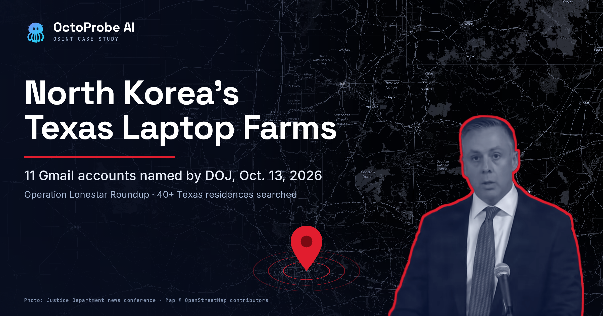
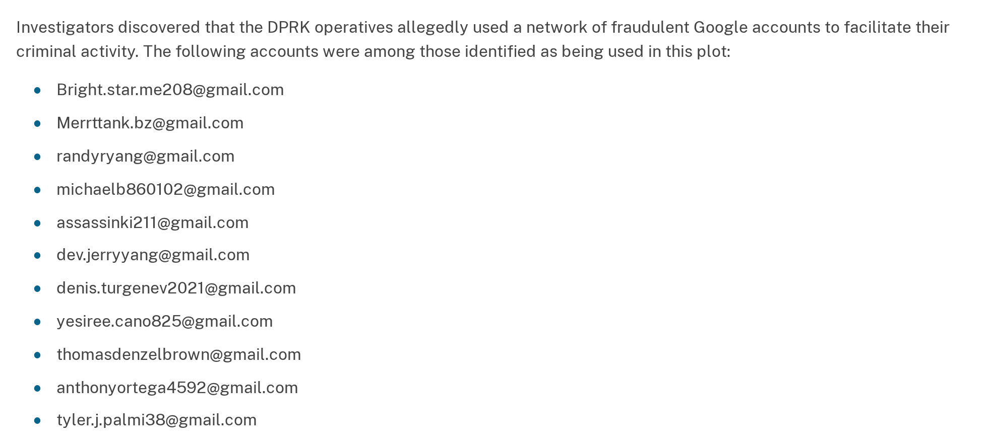
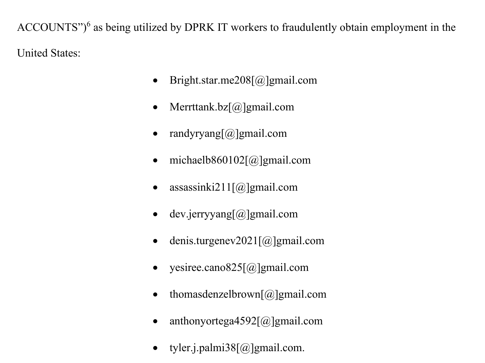
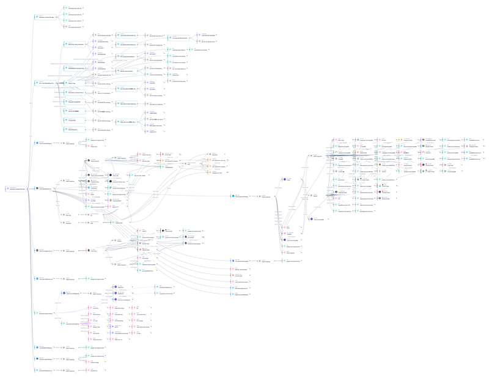
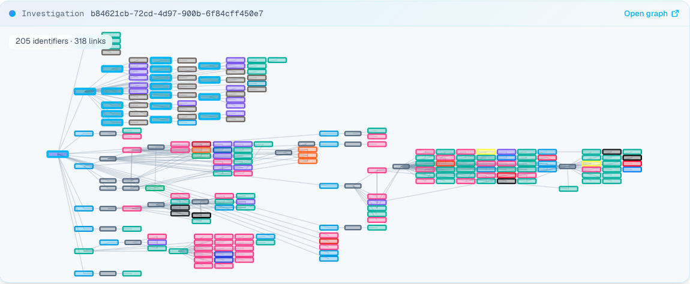
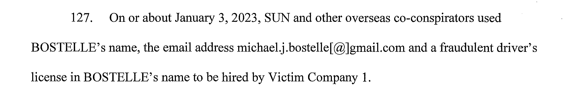
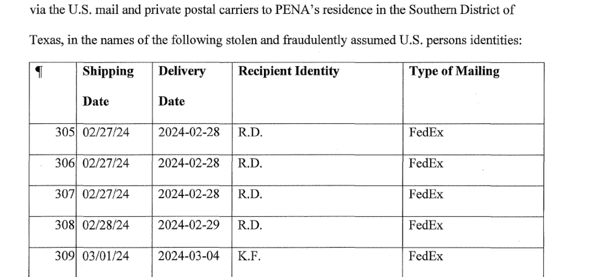

What did the Justice Department reveal about North Korea’s Texas laptop farms?
Operation Lonestar Roundup was the FBI’s September 2026 sweep of more than forty Texas homes suspected of operating as North Korean laptop farms. Agents seized 187 laptops and KVM devices. On October 13, 2026, the Justice Department published eleven Gmail addresses it says the regime’s IT workers used. No one has been charged in the Texas case.
- The FBI searched more than forty Texas residences from September 21 to 25, 2026, and seized 187 laptops and KVM devices in Operation Lonestar Roundup.
- DOJ’s national press release published eleven Gmail addresses it says North Korean IT workers used, as indicators for employers. None appears in any indictment. The same list, in the same order, is in the Texas release and the government’s court filings.
- A federal magistrate judge in Dallas ordered Google on October 9, 2026, to turn over subscriber, login, and payment records for the eleven, plus every account linked to them by cookie, phone, or recovery email.
- The Texas filings name no defendant, carry no case number, and publish no phone numbers, domains, wallets, IP addresses, or farm addresses. The U.S. attorney said prosecutors intend to indict.
- One listed account, dev.jerryyang@gmail.com, shows how a fake persona is backstopped: a developer-style address and profile photos that may be AI-generated.
- DOJ paired two moves in one coordinated announcement: a separate Ohio indictment of fourteen, and the Texas release of eleven indicator accounts with no one yet charged in Texas. OctoProbe reads the pairing as a signal that investigators are watching. DOJ has not said the cases are linked, and it does not tie the eleven Gmail accounts to any Ohio defendant.
The Justice Department has handed employers a list. On October 13, 2026, the U.S. Attorney’s Office for the Northern District of Texas and the department’s Office of Public Affairs each published the same eleven Gmail addresses, which they say belonged to North Korean IT workers who used fake American identities to get hired by U.S. companies.
The addresses came out of Operation Lonestar Roundup, an FBI sweep of suspected laptop farms across Texas. Behind them sits a court order that a judge signed four days earlier, directing Google to open the accounts’ records to investigators.
OctoProbe News traced the list through every document DOJ released with it. Here is what the record says, and what it leaves out.
What Was Operation Lonestar Roundup?
Operation Lonestar Roundup was an FBI operation against North Korean laptop farms in Texas. Between September 21 and 25, 2026, agents searched more than forty residences known or suspected to host the farms and seized 187 laptops and KVM devices, the Justice Department said on October 13, 2026. No charges from the searches had been announced as of October 21.
The Texas U.S. Attorney’s Office said agents had “disrupted a major illicit laptop‑hosting network that enabled Democratic People’s Republic of Korea IT workers to unlawfully access U.S. corporate systems using stolen or falsified American identities.” About one hundred of the devices were seized in North Texas, according to the release.
“Every laptop farm we dismantle shuts down a revenue stream that the North Korean government relies on to fund weapons programs that threaten global stability,” U.S. Attorney Ryan Raybould said.
FBI Dallas Special Agent in Charge R. Joseph Rothrock put a number on the stakes. “Each laptop seized potentially represents one company that has hired a DPRK IT worker,” he said.
No one has been charged from the searches. At a news conference in Dallas, Raybould said investigators were still gathering evidence. “We intend to indict some of these folks,” he said, WFAA reported. The Texas office said only, “The investigation remains ongoing.”
The Texas office, FBI Dallas, and the FBI’s Cyber Division ran the operation. CrowdStrike, the U.S. cybersecurity firm that calls the group Famous Chollima, said it “collaborated with the United States Federal Bureau of Investigation (FBI) to disrupt several laptop farms” in late September. The company was blunt about the payoff: “disrupting a laptop farm will likely only yield a limited impact on FAMOUS CHOLLIMA, centered mostly on the geolocation of the takedown.”
Which Email Accounts Did DOJ Name?
The Justice Department’s national press release of October 13, 2026, lists eleven Gmail addresses, from Bright.star.me208@gmail.com to tyler.j.palmi38@gmail.com, as accounts “among those identified as being used” in North Korea’s IT worker schemes. DOJ published them as indicators for employers, not as charges. None of the eleven appears in any indictment.
These are the eleven addresses, exactly as DOJ published them:
Bright.star.me208@gmail.comMerrttank.bz@gmail.comrandyryang@gmail.commichaelb860102@gmail.comassassinki211@gmail.comdev.jerryyang@gmail.comdenis.turgenev2021@gmail.comyesiree.cano825@gmail.comthomasdenzelbrown@gmail.comanthonyortega4592@gmail.comtyler.j.palmi38@gmail.com
The national release, from DOJ’s Office of Public Affairs, introduces the list in its Operation Lonestar Roundup section: “Investigators discovered that the DPRK operatives allegedly used a network of fraudulent email accounts to facilitate their criminal activity. The following accounts were among those identified as being used in these schemes:” After the eleven addresses, it adds, “Employers are encouraged to add these accounts to the list of indicators they use to identify and disrupt DPRK IT worker employment.”
That is all DOJ attached to them. The release gives no detail about any single account: no name, employer, date, or location. The accounts are indicators, not charges. No one has been indicted in the Texas case, and none of the eleven appears in the Ohio indictment announced the same day.

Transcription, N.D. Tex. press release, October 13, 2026: “Investigators discovered that the DPRK operatives allegedly used a network of fraudulent Google accounts to facilitate their criminal activity. The following accounts were among those identified as being used in this plot:” followed by the eleven addresses listed above.
Where the List Comes From
Behind the published list sits a court filing. On October 9, 2026, a U.S. magistrate judge in Dallas signed an order under 18 U.S.C. § 2703(d), a provision of the Stored Communications Act that lets the government obtain account records, though not message contents, by offering specific and articulable facts that they are relevant and material to an ongoing criminal investigation. The order and the government’s application were filed on October 12. On October 15 the Texas office added both to its release page as attachments, with file names marking them unsealed and redacted.
The application, captioned In re Application of the United States of America for an Order Pursuant to 18 U.S.C. § 2703(d), says the investigation concerns “possible violations” of the federal wire fraud and aggravated identity theft statutes, 18 U.S.C. §§ 1343 and 1028A. It lays out where the list came from. The FBI interviewed victim companies that had unknowingly hired North Korean workers, searched locations hosting laptops, and questioned U.S.-based facilitators. It added, “The FBI also received reliable information from cybersecurity companies or cyber incident response companies regarding identifiers used by DPRK IT workers.”
From that work, the FBI identified the eleven accounts “as being utilized by DPRK IT workers to fraudulently obtain employment in the United States,” the application says.

Transcription, § 2703(d) application, N.D. Tex., p. 5: “…ACCOUNTS”) as being utilized by DPRK IT workers to fraudulently obtain employment in the United States:” followed by the same eleven addresses, each written with the @ sign in brackets, for example “Bright.star.me208[@]gmail.com.”
The order tells Google to produce records “from the date the account was created to October 8, 2026.” The list is long: names, addresses, session times, IP addresses, phone and device identifiers, and the means of payment for each account. The order also reaches past the eleven. It demands “All Google accounts linked to the TARGET ACCOUNTS by cookies; recovery, secondary, forwarding; or alternate email address; Android ID; IMEI; IP address; or telephone number, including SMS recovery number or sign-in account number.”
In plain English, investigators asked Google to show them every other account the same people touched. Google had ten days to comply.
Editor’s note: OctoProbe News compared the four published versions of the list character by character: both press releases, the application, and Attachment A to the order. The spellings and the order match in all four, including the capital B in “Bright” and the doubled letters in “Merrttank.” The court filings put the @ sign in brackets, which a footnote says was done “to prevent accidental hyperlinking.” Two press-release wordings differ: the national release calls the addresses “fraudulent email accounts,” and the Texas release calls them “fraudulent Google accounts.”
What the Texas Filings Leave Out
The eleven Gmail addresses are the only selectors in the Texas record. The application and order list no phone numbers, websites, cryptocurrency wallets, or IP addresses tied to the workers. They do not say which Texas homes were searched. They do not name the companies that hired the people behind the accounts. The case-number line on both filings is blank, and no defendant is named.
The addresses themselves follow a pattern. Eight of the eleven read like personal names, from randyryang to thomasdenzelbrown. Three do not: Bright.star.me208, Merrttank.bz, and assassinki211. Seven end in numbers.
Editor’s note: A name inside an email address says nothing about who controlled it, and DOJ calls these accounts fraudulent. Sharing Gmail, one of the most widely used email services in the world, is not evidence that any two of the accounts, or any two people, are connected. The documents tie each account to the scheme, not to one another.
The Texas office has promised more. “Additional details will be released as appropriate,” its release says.
How Is a Fake IT Worker Persona Backstopped?
Backstopping is the work of making a fake identity look lived-in: a believable name, a profile photo, and supporting accounts that agree with one another. DOJ’s list shows none of that. It is a column of bare addresses. One of them, dev.jerryyang@gmail.com, shows what a single published indicator can open up when investigators pivot off it in open sources.
Here is everything the government record says about that account: it is one of the eleven listed in the national press release, and one of the eleven the FBI identified in its court application as used to obtain jobs fraudulently. DOJ attached no other detail to it. It is not named in any indictment, and nothing in the record ties it to another address on the list or to any defendant.
The address itself reads like a developer’s work email: the prefix “dev,” then a common first and last name. A name in an address says nothing about who controlled it.
What One Selector Opens Up
Everything below comes from OctoProbe’s open-source investigation, which started from that DOJ-identified account.
Pivoting off the address, OctoProbe’s investigation found the two profile photos used to backstop the persona. One shows a man in a red jacket and sunglasses on a mountainside. The other shows a smiling young man in glasses. The photos are tied to dev.jerryyang@gmail.com, an account DOJ identified in its October 13 release as used in North Korea’s IT worker schemes. The images may be AI-generated.
Running the same pivots on all eleven addresses, plus the Ohio indictment’s named parties, produced OctoProbe’s graph for the investigation: 205 identifiers and 318 links. That is the move in miniature. A bare indicator becomes a partial operational footprint of personas, profiles, and the accounts that point to them. Much of what the lookups returned is common web infrastructure, such as large social platforms and username-search hits, and none of it shows that two of the eleven accounts share an owner.


The court record explains why a persona needs pictures at all. The Ohio indictment, which does not mention the eleven addresses, says the conspirators in that case developed “fictitious personas, resumes, and online profiles to match the requirements of those IT jobs” (¶87). It says Nolte and Pena kept “various forms of fraudulent and fictitious identification and Personally Identifiable Information” for employment checks, including diplomas, résumés, and photographs (¶90).
The covers are getting better, the FBI says. Its October 13 alert says the workers pay to use facilitators’ social media or professional networking accounts “which often contain years of legitimate activity history.” They also “rotate through bank accounts, street addresses, social media accounts or other identifiers at an unusually high rate.” On October 13, federal authorities also warned that the operatives are “increasingly using artificial intelligence and deepfake technology to conceal their identities,” WFAA reported.
That is why a polished profile proves little on its own, and why a bare address on a DOJ list is only a starting point. A plausible name, a friendly photo, and a matching set of accounts are each weak signals. The FBI’s answer is layered checks: live identity verification at hiring, and continued verification after it.
Why Pair an Indictment With a List of Indicators?
The October 13 announcement put two different tools side by side. The national release described “coordinated actions” that “include an indictment, two arrests, searches of multiple known or suspected ‘laptop farms’ in Texas.” It filed them under the “DPRK RevGen: Domestic Enabler Initiative,” which it said “prioritizes targeting and disrupting the DPRK’s illicit revenue generation schemes and its U.S.-based enablers.”
| Indictment prong (Ohio) | Indicator-release prong (Texas) | |
|---|---|---|
| What DOJ released | A four-count indictment, No. 1:26-cr-00429, returned October 1 and unsealed October 13 | Eleven Gmail addresses in the national release, with no detail on any one account |
| Court | U.S. District Court, Northern District of Ohio | A Section 2703(d) application and order in the Northern District of Texas, with no case number |
| Who is named | Fourteen defendants: U.S. facilitators Michael James Bostelle and Juan Cecilio Pena Carrillo, ten China-based defendants, and two still under seal | No one |
| Who it speaks to | Defendants and the court | Employers, asked to add the accounts to their indicator lists |
| Status, October 21, 2026 | Charged; Bostelle and Pena arrested | Searches and 187 seized devices; no charges, though the U.S. attorney says prosecutors intend to indict |
Read together, the two prongs look like a strategic communications posture, not just a filing schedule. That is OctoProbe’s analysis; DOJ has not described its rollout this way. The indictment says the government is charging people. The indicator release says something else: that investigators are watching specific accounts now, before anyone in Texas has been charged. Publishing live selectors tells North Korean operators and their U.S. facilitators that those accounts, and the infrastructure behind them, are known to the government. It also gives private companies something to search for.
The department’s own framing points the same way. The national release says the workers are recruiting American facilitators “to counter improved private sector detections and law enforcement actions.” The FBI alert issued the same day said the bureau “is updating its previous guidance to the public and private sector on techniques and recommendations to identify and avoid this threat.” A list of accounts for employers to load is that guidance in its most concrete form. Releasing live indicators is a posture of visible watching, not only a piece of evidence.
Coordinated is not the same as connected. The two prongs sit in different courts, and DOJ has not said they are one case.
Is the Ohio Indictment Part of Operation Lonestar Roundup?
DOJ has not said the two cases are linked. It announced the Ohio indictment alongside the Texas searches on October 13, 2026, in one national release, and credited the Ohio prosecutors’ office with assisting the Texas operation. But the Texas filings name no defendant, and the Ohio indictment never mentions Operation Lonestar Roundup.
In its paragraph on Lonestar, the national release said, “Valuable assistance was provided by the U.S. Attorney’s Office for the Northern District of Ohio.”
That is as far as the department went. The Record asked whether the indictment and arrests were linked to the Texas raids. “The department did not respond to requests for comment,” it reported. Secjuice, a security publication, read the paperwork the same way: “They are separate cases in different courts.”
Pena lives in Texas, and DOJ announced his arrest on the same day as the searches. The department has not said whether his home was among the more than forty residences searched.
Who Is Charged in the Ohio Case?
Fourteen people are charged in United States v. Sun Sheng Ming, a four-count indictment returned by a federal grand jury in the Northern District of Ohio on October 1, 2026, and unsealed October 13, according to the U.S. Attorney’s Office for the Northern District of Ohio. Twelve are named. Two Americans were arrested: Michael James Bostelle of Philadelphia and Juan Cecilio Pena Carrillo of San Juan, Texas. Ten defendants are China-based, and the identities of two more remain under seal, DOJ said.
Each American first went before a judge close to home. Pena’s case was opened in the Southern District of Texas on October 7 (No. 7:26-mj-03437), and Bostelle’s in the Eastern District of Pennsylvania on October 9 (No. 2:26-mj-01987), court dockets show. Both are expected to appear in the Northern District of Ohio, prosecutors said.
The charges are conspiracy to commit wire and mail fraud, money laundering conspiracy, conspiracy to commit identity theft, and aggravated identity theft. Prosecutors allege the scheme reached more than seventy U.S. companies, compromised the identities of more than twenty-five Americans, and generated approximately $3 million in revenue for the IT workers (indictment ¶15).
The indictment carries its own Gmail selector. It alleges that on or about January 3, 2023, overseas co-conspirators “used BOSTELLE’s name, the email address michael.j.bostelle[@]gmail.com and a fraudulent driver’s license in BOSTELLE’s name to be hired by Victim Company 1” (¶127). That address is not among the eleven on the Texas list.

Transcription, indictment ¶127, p. 25: “On or about January 3, 2023, SUN and other overseas co-conspirators used BOSTELLE’s name, the email address michael.j.bostelle[@]gmail.com and a fraudulent driver’s license in BOSTELLE’s name to be hired by Victim Company 1.”
The Ohio Man Named but Not Charged
The American at the center of the Ohio indictment is not a defendant. It identifies Trey Michael Nolte of Ohio as a co-conspirator “named but not charged herein” (¶8). Nolte has not been charged with any crime. The department “did not explain why he was not charged,” The Record reported.
Prosecutors allege he founded Dark Falls LLC, an Ohio company that “purported to specialize in software development” and that they call a shell company (¶17). The indictment says he “recruited, managed and trained the U.S.-based facilitators, including BOSTELLE” (¶11). It alleges he created michael.j.bostelle[@]gmail.com on March 16, 2022 (¶126), was asked in April 2023 for updates on “approximately 24 laptops” he kept running for Sun (¶107), and had mail and paystubs in another person’s name when agents searched his residence on July 15, 2025 (¶177).
The indictment also lists the online monikers, companies, and one IP address prosecutors attribute to the conspiracy:
| Selector | Type | Attributed to | Source |
|---|---|---|---|
michael.j.bostelle@gmail.com | Gmail address | Fraudulent account in Bostelle’s name, created by Nolte and used to get hired by Victim Company 1 | Indictment ¶¶126–127, 129 |
GOLDLINE 1 | Online moniker | Sun Sheng Ming, who also used the names Wang Caihong and Chunayn | Indictment ¶18 |
GOLDLINE 2 | Online moniker | Pei Li Guang | Indictment ¶19 |
GOLDENSEA787, GOLDENCENTAUR55, GOLDLINE 3 | Online monikers | Weng Shou Cheng | Indictment ¶20 |
JAMES WANG, MING WANG JIAN HOOK, CARROT7277 | Online monikers | Wang Jian Jun | Indictment ¶23 |
PATRICK BONNER, JOHN ANTHONY NEVAREZ | Online monikers | Jin Long | Indictment ¶28 |
SYDROM9265 | Online moniker | An overseas programmer introduced by a co-conspirator whose name DOJ redacted | Indictment ¶¶113–114 |
Sxxx.Bxxx@gmail.com | Gmail address (masked by DOJ) | Identity and account Sun allegedly passed to Nolte | Indictment ¶116 |
Dark Falls LLC | Ohio company | Shell company founded by Nolte, who is not charged | Indictment ¶¶12, 17 |
B Succeed, LLC | Texas company | Incorporated by Jin Long to verify fake past employment | Indictment ¶28 |
39.152.179.72 | IP address | China Mobile address behind about 95 percent of MFA approvals for Victim Company 1 devices | Indictment ¶134 |
Editor’s note: The Ohio indictment is a scanned PDF. OctoProbe News ran text recognition on all fifty-eight pages and checked each selector and quotation in this article against the page image.
What Is a North Korean Laptop Farm?
A North Korean laptop farm is a home in the United States where a paid facilitator keeps company-issued laptops plugged in and online, so IT workers overseas can log in remotely and appear to be working from inside the country. The Ohio indictment describes facilitators who “receive and host multiple laptop computers” for exactly that purpose.
The indictment’s fuller definition: U.S. facilitators “receive and host multiple laptop computers (‘laptops’) and other hardware issued by U.S. victim companies at their residences in the U.S., referred to as ‘laptop farms.’” (¶4).
The facilitator then opens the laptop to the worker abroad. That happens either through remote-desktop software or by “connecting the laptop to a hardware device designed to allow for remote access (such as a keyboard, video, and mouse switch or ‘KVM’ switch)” (¶5). A KVM switch lets someone operate a computer’s keyboard, screen, and mouse from somewhere else.
The farms are getting smaller. In a public service announcement issued the same day, the FBI said the workers “have shifted to maintaining a larger number of laptop farms, with fewer laptops at each to avoid single points of failure.” The bureau’s alert I-101326-PSA adds that the workers increasingly pay Americans to sit interviews, verify identities, and lend out social media and professional networking accounts.
A Laptop Farm in the Indictment
The Ohio indictment shows what one looks like on paper. Pena, it alleges, “received and hosted U.S. victim company laptop computers and facilitated remote access to those computers by overseas IT workers” (¶31). A table in the indictment logs thirty-eight package deliveries to “PENA’s residence in the Southern District of Texas,” the last dated September 19, 2025 (¶¶304–342). Twenty-five were addressed to Pena under some form of his own name. The rest bore the initials of stolen identities, such as R.D. and K.F.

Transcription, indictment ¶304, p. 43: “On or about the following dates, overseas co-conspirators caused packages containing laptop computers and other items belonging to U.S. victim companies to be delivered via the U.S. mail and private postal carriers to PENA’s residence in the Southern District of Texas, in the names of the following stolen and fraudulently assumed U.S. persons identities.” Rows 305 to 309 show FedEx deliveries from February 28 to March 4, 2024, four under “R.D.” and one under “K.F.”
How Do North Korean IT Workers Get Hired at U.S. Companies?
They apply under stolen or invented American identities, backed by forged documents, fake résumés, and U.S. phone numbers, and they hide their location behind VPNs and proxies, DOJ says. The Ohio indictment adds human stand-ins: Americans who rented out their names, sat interviews, and took delivery of the company laptops at home.
The indictment lays out the method, step by step (¶87, pp. 14–16):
- Build the persona. Identify remote IT jobs and develop “fictitious personas, resumes, and online profiles to match the requirements of those IT jobs.”
- Steal an identity. Take, or buy, the identities of real Americans.
- Backstop it. Validate the identity with forged documents, improperly notarized forms, fake diplomas, and fictional employment references tied to fraudulent email addresses and phone numbers.
- Apply. Seek remote jobs with forged passports, Social Security cards, and driver’s licenses bearing the workers’ photos and the victims’ names.
- Route the hardware. Have companies ship laptops to facilitators’ homes, where the machines are opened to remote access.
- Route the pay. Direct payroll into U.S. bank, money-transfer, and payment accounts the conspirators control, then move the money abroad.
Interviews were the weak point, and the indictment alleges the conspirators planned around them. In 2019, Sun allegedly coached Nolte before an interview, telling him, “in sum and substance, that employers just want to see an American and he, SUN, would type all the answers to the interview questions” (¶97). In July 2024, Sun allegedly directed Nolte “to hire an actor to portray S.B. during an in-person job interview with a local hiring manager in Akron, Ohio” (¶120).
Pena’s identity, the indictment alleges, was used again and again. On January 14, 2025, “an individual claiming to be PENA conducted an online interview with Victim Company 3” and got an offer. Thirteen days later, “a second individual using PENA’s identity engaged in an online onboarding meeting” with the same company (¶¶140, 143).
Phones mattered too. Jin Long, using the moniker PATRICK BONNER, allegedly wanted Nolte’s number for “additional account verifications because it was not a VOIP number” (¶106). VoIP numbers are internet-based lines that are easy to create in bulk. For employment history, Jin Long allegedly set up B Succeed, LLC, in Texas to provide “validation of past employment for fraudulent overseas IT worker applications” (¶28). Fake diplomas came from “the unaccredited non-U.S.-based online college Charter University” (¶90).
What Are the Red Flags of a North Korean IT Worker?
The charging documents point to a consistent set: a new hire who dodges video calls and in-person meetings, a different person on camera at onboarding, remote-access software on the company laptop, logins and MFA approvals from abroad, a VoIP phone number, unaccredited diplomas, and several company laptops shipped to one home.
No single sign is proof. The FBI says the workers “cannot be identified reliably with a single indicator” and urges companies to stack checks across hiring and employment, an approach it calls “identity in depth.” The documents describe these signals:
- Dodging the camera. One worker using Pena’s identity “made excuses in order to evade attending in-person meetings, video calls, or responding promptly to requests” and was fired (¶162).
- A different face. A second person using Pena’s identity joined an onboarding call after someone else had done the interview (¶143).
- Remote-access software. Conspirators allegedly installed Chrome Remote Desktop, AnyDesk, and TeamViewer on a company laptop, then fielded the employer’s questions about the prohibited software (¶¶145–146).
- Foreign logins. “MFA was accepted approximately 95% of the time from IP 39.152.179.72, which is owned by China Mobile Communications Corporation and resolves to China” (¶134). MFA, or multi-factor authentication, is the second login check, such as a code sent to a phone.
- VPNs and proxies. The workers hide their location with “virtual private networks and proxy infrastructure,” DOJ says.
- Odd credentials. Diplomas from Charter University and employment references from shell companies (¶90; ¶28).
- Laptops on the move. Facilitators were told to move laptops so companies “would not detect the scheme through IP tracing” and to send a list of the companies shipping them laptops, so that no single employer sent laptops for several fake hires to one address (¶110; ¶115).
How to Check a Remote Hire Against DOJ’s Indicators
The same documents translate into a short screening routine:
- Load the published selectors. Add the eleven Gmail addresses from the October 13, 2026, releases, and the Ohio indictment’s michael.j.bostelle@gmail.com, to the indicator lists your hiring and security teams search. Do not rely on the list alone; the FBI says no single indicator reliably identifies these workers.
- Match the laptop’s destination to the hire. Confirm that the shipping address for company equipment belongs to the person you hired, and flag any address that receives laptops for more than one new employee.
- Insist on live contact. Require camera-on interviews and onboarding, and compare the face and voice from one meeting to the next. Treat repeated excuses to skip video calls or in-person meetings as a warning.
- Audit the issued device. Check company laptops for remote-access tools your policy does not allow, such as AnyDesk, TeamViewer, or Chrome Remote Desktop, and for KVM-over-IP hardware attached to them.
- Watch where logins come from. Review sign-in and MFA approval locations. Approvals from foreign mobile networks, or traffic routed through VPNs and proxies, do not fit a worker who claims to live in the United States.
- Verify the paper trail. Call references at numbers you find yourself, confirm that degrees come from accredited schools, and check whether a past employer is a real operating business rather than a shell company.
- Report what you find. File a report with the FBI at ic3.gov.
When Did Each Step Happen?
The two cases span seven years of alleged conduct and three weeks of public action. The dated record:
| Date | Event | Source document |
|---|---|---|
| February 1, 2019, to January 21, 2026 | Period of the wire and mail fraud conspiracy charged in Count 1 of the Ohio indictment | Indictment ¶85 |
| March 16, 2022 | Nolte creates michael.j.bostelle@gmail.com, the indictment alleges | Indictment ¶126 |
| January 3, 2023 | Bostelle persona hired by Victim Company 1 using that address | Indictment ¶127 |
| January 14, 2025 | Someone claiming to be Pena interviews with Victim Company 3 | Indictment ¶140 |
| July 15, 2025 | Agents search Nolte’s Ohio residence | Indictment ¶177 |
| September 19, 2025 | Last logged package delivery to Pena’s Texas residence | Indictment ¶342 |
| September 21–25, 2026 | FBI searches more than forty Texas residences in Operation Lonestar Roundup | DOJ national release |
| October 1, 2026 | Federal grand jury in the Northern District of Ohio returns the indictment | Indictment, p. 1 |
| October 7, 2026 | Pena’s case opened in the Southern District of Texas | No. 7:26-mj-03437 |
| October 9, 2026 | Magistrate judge in Dallas signs the § 2703(d) order to Google; Bostelle’s case opened in the Eastern District of Pennsylvania | Order, p. 1; No. 2:26-mj-01987 |
| October 12, 2026 | Order and application filed in the Northern District of Texas | Application, p. 1 |
| October 13, 2026 | DOJ announces the Texas operation and the eleven Gmail addresses, alongside the Ohio indictment and arrests; FBI issues alert I-101326-PSA | N.D. Tex. release; FBI PSA |
| October 15, 2026 | Texas release page updated to list the unsealed order and application as attachments | N.D. Tex. release |
Frequently Asked Questions
Is the Ohio indictment part of Operation Lonestar Roundup?
The Justice Department has not said so. It announced the Ohio indictment alongside the Texas searches on October 13, 2026, and said the Ohio U.S. Attorney’s Office assisted the Texas operation. But the department did not respond when The Record asked whether the arrests were linked to the Texas raids, and the Texas court filings name no defendant.
Why did DOJ publish the Gmail accounts before charging anyone in Texas?
DOJ asked employers to add the accounts to the indicators they use to spot North Korean IT workers. It released them in the same announcement as the Ohio indictment, which it called coordinated actions. OctoProbe reads that pairing as a deliberate signal that investigators are watching these accounts, and as a way to help companies catch them. The department has not described its strategy that way, and the Ohio and Texas matters remain separate cases.
Has anyone been charged in the Texas laptop farm searches?
Not as of October 21, 2026. The Texas filings that list the eleven Gmail accounts carry no case number and name no defendant. “We intend to indict some of these folks,” U.S. Attorney Ryan Raybould said at an October 13 news conference in Dallas, WFAA reported.
Did DOJ say Bostelle or Pena used the eleven Gmail accounts?
No. Neither press release nor the Texas court filings tie the eleven Gmail addresses to Michael James Bostelle, Juan Cecilio Pena Carrillo, or any other defendant. The one Gmail address the Ohio indictment spells out, michael.j.bostelle@gmail.com, is not on the Texas list.
What did the court order Google to hand over?
A federal magistrate judge in Dallas signed an order on October 9, 2026, under 18 U.S.C. § 2703(d). It directs Google to disclose, within ten days, subscriber names and addresses, session and IP records, device identifiers, payment records, and every Google account linked to the eleven by cookies, recovery email, phone number, or IP address.
What charges do Bostelle and Pena face?
The four-count indictment in the Northern District of Ohio, case No. 1:26-cr-00429, charges conspiracy to commit wire and mail fraud, money laundering conspiracy, conspiracy to commit identity theft, and aggravated identity theft. It names Bostelle, Pena, and ten China-based defendants. Two more defendants remain under seal, the Justice Department said.
Where should someone report a suspected North Korean IT worker?
The FBI asks for reports at ic3.gov, the bureau’s Internet Crime Complaint Center. FBI Dallas Special Agent in Charge R. Joseph Rothrock said the bureau encourages “any company, or individual, who has information on this scheme to come forward and file a report at ic3.gov.”